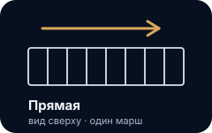
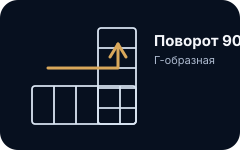
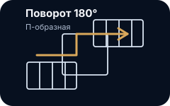
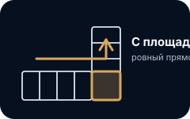
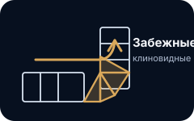
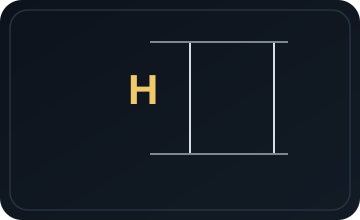
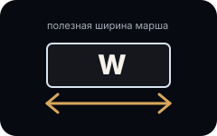
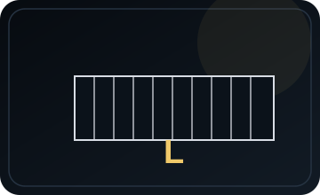
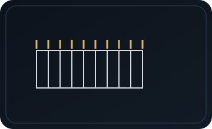

Пустой проём
Нужно подобрать новую лестницу.
Static UX mockup
Премиальный dark preview: без реального расчёта, Supabase, формул и коэффициентов.
Шаг 1
Начинаем с ситуации на объекте, а не с инженерных настроек.
Нужно подобрать новую лестницу.
Основание уже стоит.
Нужна отделка основания.
Обшивка или замена.
Нужна консультация.
Шаг 2
Ключевой экран выбора формы: только вид сверху, понятные повороты и без 3D.

Один марш без поворотов.

Г-образная лестница.

П-образная лестница.
Инженер поможет выбрать.
Отличаем ровную площадку от клиновидных забежных ступеней.

Ровный прямоугольник между маршами.

Клиновидные ступени в зоне поворота.
Шаг 3
Просим только H, W и L. Если размер неизвестен — уточним на замере.



Шаг 4
Показывается только для выбранного сценария: стены, окно, дверь рядом или размер площадки.
Шаг 5
Внешние понятные варианты без внутренних rate keys и настроек каталога.
Ровная база под цвет интерьера.
Тёплая натуральная отделка.
Сочетание материалов.
Подберём после фото.
Шаг 6
Ограждение считается по длине марша и верхней балюстраде, если она нужна.

Если не требуется.
Лаконично и надёжно.
Лёгкий визуальный вид.
Тёплый акцент.
Под интерьер.
Шаг 7
Финальная смета уточняется после проверки размеров и замера.